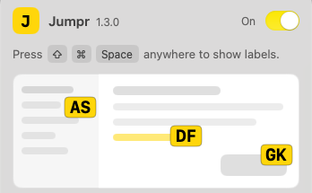
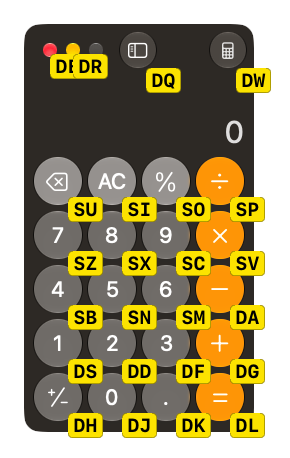

Jumpr needs macOS 15 or later. It works with one display or several.
Install
- Download Jumpr.zip.
- Unzip it and move Jumpr to your Applications folder.
- Open Jumpr.
Jumpr lives in the menu bar and has no Dock icon. Click its menu bar icon to open the panel.

Grant the permission
macOS asks for the Accessibility permission the first time you open Jumpr. Open System Settings → Privacy & Security → Accessibility and turn on Jumpr.
Tip
Can't find the setting? Until you grant the permission, the panel has an Open Accessibility Settings button that takes you there.
The Accessibility permission explains why Jumpr needs it and what it does with it.
Click your first label
- Press ⌘ ⇧ Space. Labels appear on every display.
- Type the two letters of the label you want.
- When the letters match, Jumpr clicks.
To close the labels without clicking, press Esc.

Where to go next
- Labels and keys lists every key that works while labels are up.
- Kinds of click shows how to right-click or double-click instead.
- Scrolling covers scroll mode.